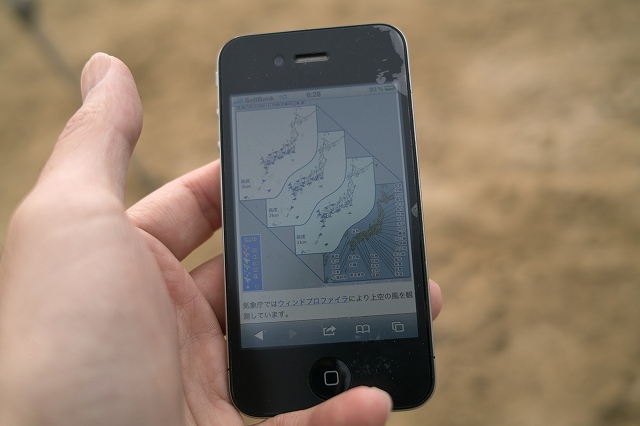

6時にグランド集合ということでしたが、まぁ助教の人だけです。インターバルタイマを使って、動きのある写真が撮りたかったそうで、最初から終わりまで観測してました。他のみんなは自宅や夢の中からです。
ND8とND4をそれぞれ6枚と1枚
6時、誰もいないな
帯状の雲が邪魔
上空の風向、風速から晴れるはず！
晴れろ！
晴れました
計測研観測所
お、他所もやってるな
ご近所の家族
にぎやか
金環日食だけで帰るん？
学校とか会社あるしね
まだ1時間くらいある

流石に誰もいない
暑い！もう少し
撤収
| ・金環日食観望会 (H24.05.21) | |||
6時にグランド集合ということでしたが、まぁ助教の人だけです。インターバルタイマを使って、動きのある写真が撮りたかったそうで、最初から終わりまで観測してました。他のみんなは自宅や夢の中からです。 |
|||
|
ND8とND4をそれぞれ6枚と1枚 |
6時、誰もいないな | ||
|
帯状の雲が邪魔 |

上空の風向、風速から晴れるはず！ | ||
|
晴れろ！ |
晴れました | ||
|
計測研観測所 |
お、他所もやってるな | ||
|
ご近所の家族 |
にぎやか | ||
|
金環日食だけで帰るん？ |
学校とか会社あるしね | ||
|
まだ1時間くらいある |
流石に誰もいない | ||
|
暑い！もう少し |
撤収 | ||